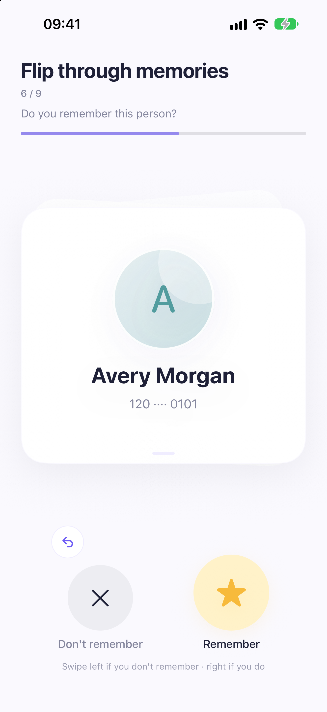
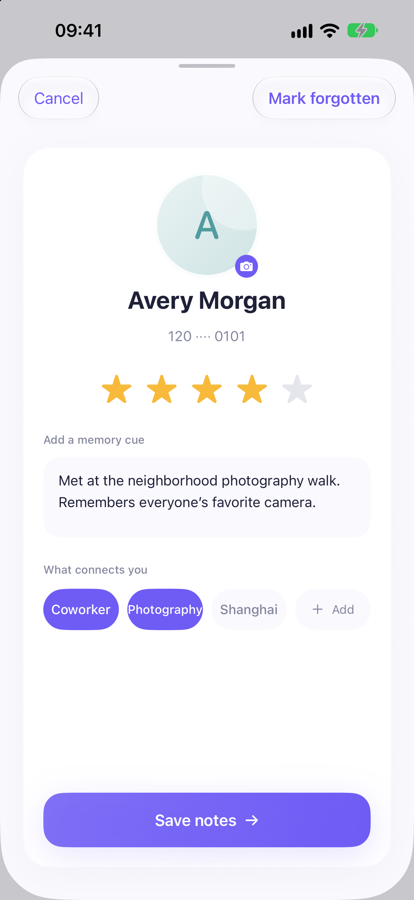
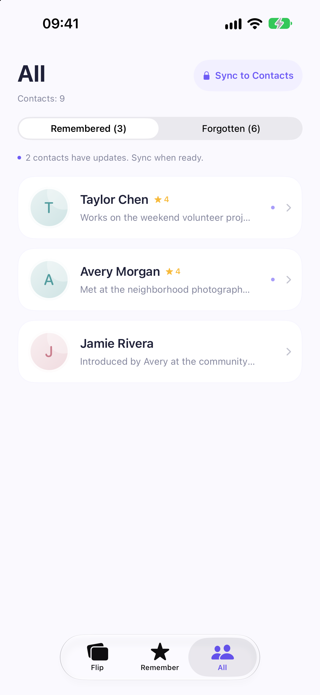

FlipHello Support
FlipHello is an iPhone contact-management app that helps you remember people using per-contact ratings, tags, and memory cues. You can try demo mode without granting Contacts access.
Sync to the Notes field in Apple Contacts
When you choose Sync, FlipHello writes your ratings, tags, and memory cues to the Notes field of the corresponding contact in Apple Contacts. These details can then be viewed and edited in the system Contacts app, independently of FlipHello.
FlipHello reads existing contact Notes to import those details. Immediately before syncing, it reads the current Notes again so it can merge your changes and retain other note content. Existing FlipHello ratings and tags are updated rather than repeatedly appended. Your edits stay locally in FlipHello until you choose to sync.
- Allow Contacts access and choose the people you remember.
- Add a rating, tags, and a note about the person.
- Open All, review the pending changes, and choose Sync. A one-time purchase unlocks contact sync and removes ads.
- Open the same person in Apple Contacts to view the result in Notes.
For example, a fictional contact's Notes can contain:
⭐️⭐️⭐️⭐️ Met at the neighborhood photography walk. Remembers everyone's favorite camera. #Coworker #Photography
Contact names, photos, and Notes are processed on your device. FlipHello does not upload them to the developer or include them in advertising requests. You can manage Contacts access in iOS Settings.
FlipHello is being prepared for release. Notes sync in distributed builds is awaiting Apple's Contact Notes Field Access approval.
App screenshots
Captured from the running iOS app in a dedicated simulator. All people and contact details shown here are fictional.



Contact support
For help, bug reports, or purchase questions, email Loading contact address…. Please include your iOS version and a brief description of the issue. Do not email anyone's contact details.